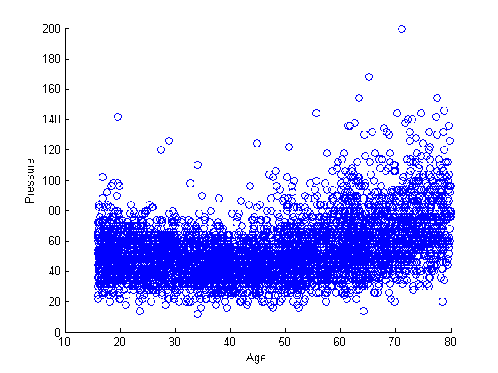
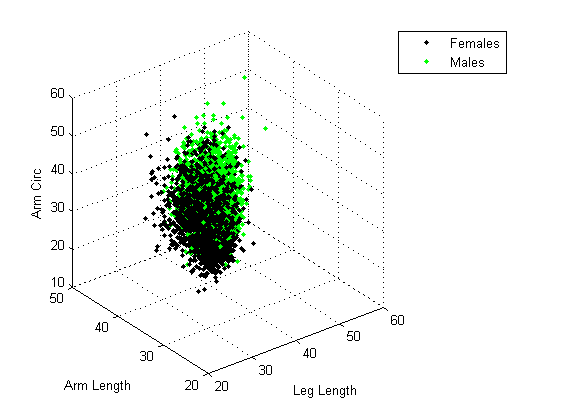

Chapter 01 - The MATLAB Language and Desktop Environment.
Author: Ken Deeley, ken.deeley@mathworks.co.uk
This chapter provides the introductory MATLAB material necessary to work effectively in the MATLAB environment. It serves as a mini "crash-course" covering the fundamental programming techniques and syntax which are required for the remainder of the bootcamp. It's not recommended to enter the bootcamp with no previous MATLAB knowledge, although a very intelligent person should be able to follow the gist of this chapter without getting too much into the low-level programming details. As pre-work for the bootcamp, we strongly recommend the interactive online tutorial available free of charge for academic users at: https://www.mathworks.co.uk/academia/student_center/tutorials/
This contains more than three hours of introductory MATLAB materials and provides suitable prerequisite training prior to attendance at a MATLAB-based bootcamp.
Note that this chapter can be customised depending on the background and existing knowledge level of the audience. To be consistent with Software Carpentry guidelines, programming fundamentals should be covered. Therefore, a minimal core set of materials for this chapter should cover vectors and matrices, indexing, programming constructs such as loops, logical variables and conditional logical statements. Depending on majority interests, an overview of data types would be useful. Standard numeric arrays should be covered. Cell arrays, structures and tables are probably going to be useful for a lot of delegates as well, but how much emphasis is given to each data type can be left up to the instructor.
Outline:
- The MATLAB Desktop
- Importing data from one file
- Importing data from multiple files
- Indexing into vectors and matrices to retrieve data
- Concatenating vectors and matrices to construct data
- Removing missing values from data
- Basic plot options
- Annotating plots
- Cell and structure arrays
- Saving data to MAT-files
- Running and publishing scripts
- Code sections
Reference files for this chapter:
- ../MedicalData.txt
- ../HeightWaistData.txt
- ../ArmsLegs/*.txt
- ../Reference/S01_Import.m
- ../Reference/S01_HealthData.mat
Contents
- Course example: Biomedical data.
- The MATLAB Desktop.
- The MATLAB Editor.
- Code Sections.
- Help and Documentation.
- Import data from a single file containing heterogeneous data.
- Plotting vectors and annotating graphs.
- Low-Level File I/O.
- Cell Arrays.
- Converting Data Types.
- Accessing Data in Arrays.
- Dealing with Missing Data.
- Importing Data from Multiple Files.
- Programming Constructs.
- Structure Arrays.
- Concatenation.
- Logical Indexing.
- Saving and Loading MAT-Files.
- Publishing Code.
Course example: Biomedical data.
We will work with an anonymised biomedical data set from the 2007-2008 US National Health and Nutrition Examination Survey (NHANES). This data is freely available at: http://www.cdc.gov/nchs/nhanes/nhanes_questionnaires.htm
The idea behind choosing this dataset is that delegates from all cultural and language backgrounds should be able to relate to this data. Measurements such as arm circumference, height, weight, age are applicable to everyone.
The MATLAB Desktop.
It's worth introducing the four main components of the MATLAB Desktop (the screen that appears when MATLAB is started). The four main components are:
- The Current Folder Browser (CFB)
- The Command Window
- The Command History
- The Workspace Browser
Recommendations: Show people how to change folders, how to identify which folder they are working in, and how to add/remove directories to/from their MATLAB path. Understanding how to manipulate the path to ensure that code files are visible is a key point. Show some basic commands at the command window and emphasise that they are recorded in the command history. Show how to recall commands from the command history. Explain that the Workspace Browser stores your current MATLAB data (variables).
The MATLAB Editor.
The MATLAB Editor is used to write, edit, run, debug and publish MATLAB code. We will collect our code into a script in this initial chapter of the course. Open the Editor, and create a new script. You might find it easier to work with the Editor window docked into the main MATLAB Desktop, so that it's easy to transfer code from the Command Window and History into the Editor. Modify your Editor preferences via the main MATLAB Preferences dialog:
preferences
Code Sections.
Best practice is to write code in sections when developing scripts. This is strongly recommended, for ease of debugging and publishing. A common mistake here is not to type the space after the two percentage signs (it's worth explicitly saying this, because at least one person generally does it).
Help and Documentation.
How do we know how to get started, and which functions we need to use? Emphasise two main entry points into the documentation:
- If the function name is known, use the F1 key to access immediate pop-up help.
- If the function name is unknown, search in the box in the top-right.
Function hints can be shown with the shortcut Ctrl+F1.
Import data from a single file containing heterogeneous data.
We will use a table to hold the results. Tables are for storing heterogeneous tabular data.
% Inspect the data file: edit('MedicalData.txt') % Use READTABLE to import the data. If unfamiliar with this function, this % is a good opportunity to demonstrate the use of F1/searching in the % documentation. It's also worth mentioning the table of import/export % functions at this point. Search for "Supported File Formats" to bring up % this table in the documentation, and point out the use of the READTABLE % function. medData = readtable('MedicalData.txt', 'Delimiter', '\t'); % Why are people so old? They're not really, it's just that Age is recorded % in months. So we might want to convert the data. % Table variables are accessed using the dot syntax (similar to structures, % if people are familiar with those). medData.Age = medData.Age/12; % Note: age is recorded in months. % Best practice would be to have comments explaining any "magic numbers" in % the code. For example, where did the 12 come from? % As an alternative, we could use "self-commenting" variables, e.g. months2years = 1/12; % Compute pulse pressure and store this as an additional table variable. medData.BPDiff = medData.BPSyst1-medData.BPDias1; % What about naming conventions? Generally we would use camel case. % Table/structure variable names can be capitalised. Try to get people to % agree on some convention, and then stick with it.
Plotting vectors and annotating graphs.
How can we visualise the information we have just computed? It's worth showing all available plots from the Plots tab at this point.
figure % New figure. % Basic discrete plot and annotations. scatter(medData.Age, medData.BPDiff) xlabel('Age') ylabel('Pressure')
Low-Level File I/O.
Suppose we have data from a file containing numeric data. How can we read this in efficiently? Three-step process, using textscan for text files.
% The open/close statements are essential. Ask the audience: what happens % if the file remains open? Why is it good practice to ensure files are % closed after use? fileID = fopen('HeightWaistData.txt'); % The next step is critical. This is where you can control the precise % format MATLAB will use to import the data. See the documentation for % textscan for more details. dataFormat = '%f %f'; % Two columns of numeric (double, floating point) data. heightWaistData = textscan(fileID, dataFormat, ... 'Headerlines', 1, 'Delimiter', '\t'); fclose(fileID); % You can ask here: do we really need to use DOUBLE to store the data? How % many significant figures are there? What else could we use to save % memory? (SINGLE, specified via %f32 in TEXTSCAN).
Cell Arrays.
The data from textscan is imported as a cell array in the MATLAB workspace. The data is imported into a 1x2 cell array (each column of data is stored in a separate cell). A useful visualisation function for inspecting cell arrays is CELLPLOT. This can help to alleviate misunderstanding of how cell arrays work.
figure; cellplot(heightWaistData)
Converting Data Types.
All the elements of a MATLAB array must be the same type. This rule is particularly important when attempting to concatenate data of different types (e.g. strings and numbers). In the documentation, you can show the reference page at: MATLAB -> Language Fundamentals -> Data Types -> Data Type Conversion which has a comprehensive list of conversion functions.
% Convert the data to a useful format. HW = cell2mat(heightWaistData); % Alternatively, you can show HW = [heightWaistData{1}, heightWaistData{2}] % or even HW = [heightWaistData{:}]. However, this will require explanation % of cell indexing (curly brackets give contents) versus standard array % indexing (round brackets give a sub-cell array). % Try computing the mean of each variable. disp(mean(HW)) % Why does this not give us "proper" values? NaNs - missing data. We would % like to remove them to obtain proper results. However, we need to know % how to index into arrays before attempting this.
167.44 NaN
Accessing Data in Arrays.
Data in MATLAB can be accessed using several indexing methods. Generally, row/column, or subscript, indexing is the natural method to introduce first. Useful tips here include the use of the "end" keyword, as well as the use of the colon as an index as a shortcut for 1:end. Emphasise that row/column indices do not have to be scalar values.
% Extract height and waist data separately.
Height = HW(:, 1);
Waist = HW(:, 2);
Dealing with Missing Data.
This requires use of logical indexing (passing logical arrays as indices to other arrays). The key function here is ISNAN (it's worth showing the reference page IS* in the documentation which has a list of all useful functions for detecting certain conditions or states). Also, you can show the reference page >> doc ops which has a list of all MATLAB's operators, including logical operators which are required here.
% Remove any observations containing NaNs.
badObs = isnan(Height) | isnan(Waist);
cleanHWData = HW(~badObs, :);
disp(mean(cleanHWData))
167.47 97.612
Importing Data from Multiple Files.
We have seen how to import homogeneous and heterogeneous data from single files. Often, researchers have multiple data files with similar formats, so it is useful to know how to batch process a list of files. The documentation contains a list of functions for performing file and directory management, such as changing directory, moving files, and creating directories: MATLAB -> Data and File Management -> File Operations -> Files and Folders.
% The first step is to form a list of files to import data from. % Warning: be careful here to avoid platform-dependent issues. Use of % FILESEP is generally recommended to avoid hard-coding slashes or % backslashes. This should recover a list of .txt files in the "ArmsLegs" % directory. fileInfo = dir(['ArmsLegs', filesep, '*.txt']); fileList = {fileInfo.name};
Programming Constructs.
Here, we need to operate on each data file. We know how many data files there are, so a for-loop is appropriate. Use ISKEYWORD to display a list of MATLAB's programming keywords. You may want to mention other common constructs such as if-elseif-else, try-catch, switch-case and while-loops.
Structure Arrays.
We would like to store the name of each file (a string) as well as the numerical data it contains (a matrix with three columns) together in the same variable. Tables are not suitable for this, because in a table all variables must have the same number of observations. We can use a structure array instead. This allows access to the data using the same convenient dot syntax we used for tables, but also allows storage of mixed-size data. (However, structures have far less available functionality associated with them than tables. For example, SORTROWS comes with tables but not with structures.)
% You can show the loop being performed sequentially to begin with, and % then initiate a discussion about the Code Analyzer warning that comes up. % This should lead to a discussion about preallocation, which can be shown % explicitly using the STRUCT function, for example. However, in this case % it's much easier just to do the loop backwards and therefore have the % preallocation performed implicitly. for k = numel(fileList):-1:1 ArmsLegs(k).FileName = fileList{k}; ArmsLegs(k).Data = dlmread(fileList{k}, '\t', 1, 0); end
Concatenation.
After reading all the data, we would like to merge it into one variable so that we have all of the body measurements together. It's worth spending a bit of time talking about concatenation with square brackets [], and then mention that for comma-separated lists, you can use VERTCAT, HORZCAT and CAT.
ALData = vertcat(ArmsLegs.Data);
Logical Indexing.
We have seen logical indexing above. We used it to detect and remove missing values. It is an important and widely applicable MATLAB language feature. For example, we might want to visualise the split/separation between two different groups in our population, e.g. males and females.
females = strcmp(medData.Sex, 'F'); figure scatter3(ALData(females, 1), ALData(females, 2), ALData(females, 3), 'k.') hold on % Ask what happens if we don't use HOLD here. scatter3(ALData(~females, 1), ALData(~females, 2), ALData(~females, 3), 'g.') hold off xlabel('Leg Length') ylabel('Arm Length') zlabel('Arm Circ') legend('Females', 'Males')
Saving and Loading MAT-Files.
We have spent a lot of time and effort into importing our data effectively. Do we really want to repeat this effort if we need the data again? Probably not. You can save all the data to disk using a MAT-file (designed to hold MATLAB data and variables). Loading from MAT-files is also faster in general terms than running file import code. The idea is to import the data only once, and then save it to a MAT-file for future use or distribution to others.
% Save data to a MAT-file. save('S01_HealthData.mat')
Publishing Code.
At this point, we have a nice script summarising what we've done. To share results with others and for the purposes of presentation, we can export the MATLAB code to a supported external format (HTML, XML, TEX, PDF, DOC, PPT). Publishing code is a key reason to use sections when writing MATLAB scripts, as sections will automatically be interpreted as boundaries in the published documents. There are many text mark-up options available from the "Publish" menu, including insertion of LaTeX code, bullet lists, enumerated lists, images and hyperlinks.